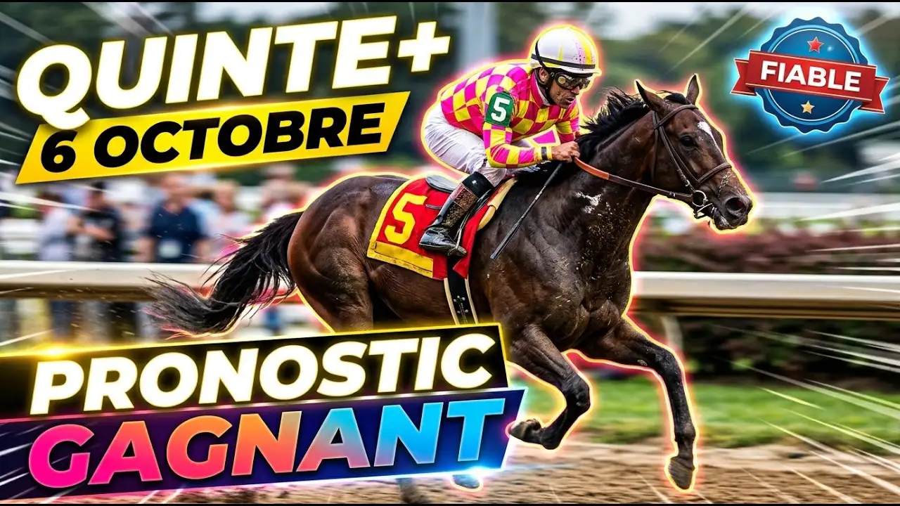

Première course de la réunion à Auteuil : 16 partants annoncés, 3600 mètres sur le gazon, corde à gauche, 98 000 euros à partager. C'est un handicap divisé de niveau listed, réservé aux chevaux de 4 ans. Ils ont tous le même âge, donc à peu près la même expérience, et c'est le poids qui fera la différence. Retenez-le.
Il n'y a pas de favori évident, ce qui est plutôt bon signe pour un Quinté. Le 13, Dehadame, ne part pas : ça fait 15 concurrents, et ceux qui l'avaient dans leurs combinaisons doivent revoir leurs calculs.
Ma base, c'est le 7, Roman Skies. Hongre de 4 ans, 65 kilos, 5 contre 1. C'est la cote la plus basse du lot, et je la comprends : il a couru en plat, en steeple et en cross, ce que personne d'autre ici ne peut dire. 94 280 euros de gains, et Kevin Nabet sait ce que 3600 mètres de haies demandent.
Ensuite le 15, Ovalie, à 7 contre 1. C'est mon choix à contre-courant. Elle ne porte que 62 kilos, elle a enchaîné les premières places depuis ses débuts en obstacle et elle saute proprement. Pendant que tout le monde parle de Nabet, de Meunier et de Philipperon, personne ne parle d'elle. Je trouve ça un peu trop facile pour le marché.
Le 3, Maskina, vient de gagner, et c'est le meilleur signe de forme qu'on puisse avoir. Elle porte 69 kilos, ce qui ne l'arrange pas, mais elle se bat. À 6 contre 1 avec Meunier, je la garde.
Le 4, Gabison a deux victoires et 87 735 euros. Léo Philipperon est l'un des meilleurs sur les haies, et à 8 contre 1 je prends. Le 2, Dinadame, a gagné deux fois cette saison. Grégoire Masure la connaît, et à 9 contre 1 elle me plaît pour une place.
Le 9, Pascialella est un cas : première ou deuxième à chaque sortie depuis ses débuts. Deuxième, première, deuxième, deuxième, première, deuxième. C'est presque suspect, mais ça marche. Avec 64 kilos et Joé Phelippe, elle est à 9 contre 1.
Pour finir, deux outsiders. Le 12, Emsilord revient d'une longue absence et porte des œillères. Il a fini deux fois deuxième, à 9 contre 1, et c'est un pari plus risqué. Le 14, Optimus, à 14 contre 1, porte 62 kilos et a déjà gagné en haies. Je le garde pour la cote.
Je me méfie des autres. Le 8, Falcon Jet (143 jours sans courir), et le 11, Château Esquiole (118 jours), ont trop attendu. Le 1, Louminos, a les plus gros gains du lot, plus de 134 000 euros, mais il porte 70 kilos et son irrégularité m'inquiète. Le 6, Memerhon, est à 11 contre 1, mais ses derniers résultats sont mauvais. Le 10, Le Professionnel, est à 20 contre 1 avec peu de gains. Le 5, Raffles Princess (28 contre 1), est restée longtemps sans courir. Le 16, Le Trezy, est à 53 contre 1.
Sur 3600 mètres, c'est la tenue qui décidera. Roman Skies et Ovalie sont mes deux forces, Maskina et Gabison mes alternatives, le reste se bat pour les places.
PRONOSTIC : 7 - 15 - 3 - 4 - 2 - 9 - 12 - 14
Regardez l'analyse complète sur YouTube :
▶️ Pronostic Quinté Auteuil 6 octobre
Bonne chance sur vos combinaisons, et à bientôt pour la suite des courses.